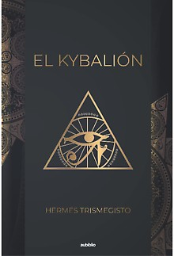

El Kybalion
Descrição do livro
Mucho placer nos causa el poder presentar este trabajo a la atención de los estudiantes e investigadores de las Doctrinas Secretas, obra que está basada en las antiquísimas enseñanzas herméticas. Se ha escrito tan poca cosa sobre este asunto, a pesar de las innumerables referencias que se han hecho de estas enseñanzas en muchos de los trabajos sobre ocultismo, que los investigadores de las verdades arcanas habrán, sin dudas, presentido la aparición de este libro.
Baixar Livro